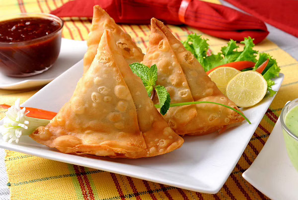

Samosa

Description
Samosas are ubiquitous in India. Vendors, shops, school and college
canteens, and every M.G. Road in every Indian city. People will gladly
walk through winding lanes or brave traffic to get to that special dukaan
or halwai selling delectable samosas. Samosa, a ‘bad guy’ is blamed for
diet bloopers, weight gain, cholesterol – for pretty much everything and
anything; however, it is still the King of Indian street food, loved by
toddlers to grandpas. It’s braved the invasions of pizzas and pastas and
held on to its post, so give it some credit, won’t you?
You pause after piercing the outer shell and inhaling the aroma. You bite
into a piece as the brittle crust and soft potatoes laced with caraway,
coriander, and chillies dissolve. Your nod communicates the experience
without using words. You can't stop at one, and after two, your stomach is
full; but your heart craves more, and you commit more sins of guilty
eating.
Ingredients
- 2 cups all-purpose flour
- 3 tablespoons ghee or canola oil
- ½ teaspoon salt
- ½ teaspoon caraway seeds
- ¾ cup cold water
- 5 medium potatoes, peeled and chopped
- 6 tablespoons canola oil, divided
- 1 cup fresh or frozen peas, thawed
- 1 teaspoon minced fresh gingerroot
- 1 teaspoon garam masala
- ½ teaspoon cumin seeds
- ½teaspoon salt
Optional: Fennel seeds, crushed coriander seeds, caraway seeds or amchur
(dried mango powder)
Directions
-
In a large bowl, combine flour, ghee, salt and caraway seeds until
mixture resembles bread crumbs. Gradually stir in enough water to form a
firm dough. Turn onto a lightly floured surface; knead until smooth and
elastic, 6-8 minutes. Cover and let rest for 1 hour.
-
Place potatoes in a large saucepan and cover with water. Bring to a
boil. Reduce heat and cook until just tender, 8-10 minutes; drain. Set
aside to cool slightly. In a large skillet, heat 3 tablespoons oil over
medium heat. Add potatoes and cook until potatoes start to cling to the
skillet, about 5 minutes. Stir in peas, ginger, garam masala, cumin
seeds and salt; cook until heated through, about 2 minutes. Stir in
optional ingredients as desired. Set aside.
-
Divide dough into 6 pieces. Roll 1 piece of dough into a 10x6-in. oval.
Cut dough in half. Moisten straight edge with water. Bring 1 corner of
half moon up to meet the other corner of half moon, forming a cone.
Pinch seam to seal. Fill with 3-4 tablespoons potato mixture. Moisten
curved edge of dough with water; fold over top of filling and press seam
to seal. Gently press the bottom of each samosa to flatten slightly.
Repeat with remaining dough and filling.
-
Preheat air fryer to 350°. Brush the samosas with the remaining 3
tablespoons oil. In batches, arrange in a single layer, without
touching, on tray in air-fryer basket. Cook until golden brown, about 15
minutes.
Return to Top
Return to Home